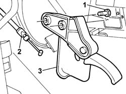

7025A24 boot lid opening lever - r+r
- Path
- Procedures > 70 FITTINGS > 7025 COMPARTMENT LIDS > 7025A bonnet lid > 7025A24 boot lid opening lever - r+r
- Kind
- repair procedure (removal / refitting; the operation number is the code)
- Applies to
- all engines; all production periods
- Interactive page
- https://sloeber94.github.io/elrnDB-fPnd/en/#/2753136
Applies to: all engines; all production periods
 Removing
Removing
 Refitting
Refitting7040L42 sill plate connection of one front door (1), lh or rh - r r (left side)
1. Undo the retaining bolts.
Extract the bonnet release lever.
2. Disconnect the bonnet release cable.
3. Remove the bonnet release lever.

Applies to: all engines; all production periods
Refitting
RemovingConnect the bonnet release cable to the lever.
Position the bonnet release lever and tighten the fixing bolts.
7040L42 sill plate connection of one front door (1), lh or rh - r r (left side)